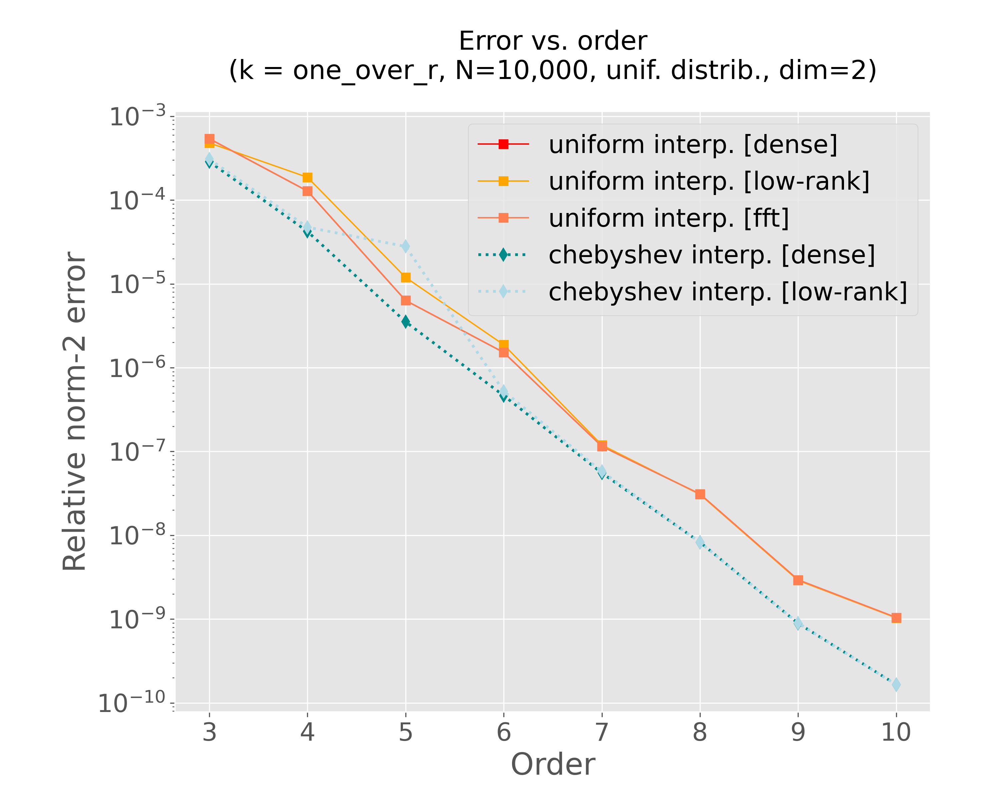
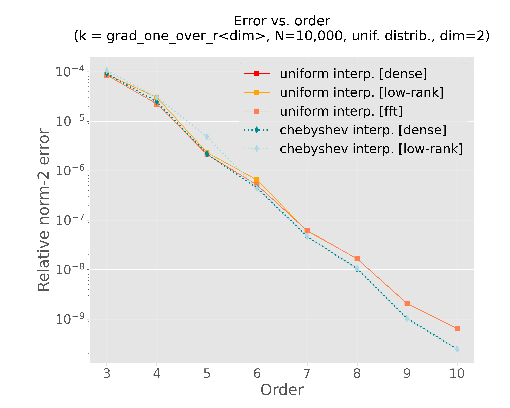

ScalFMM experiments for the next release (draft)
Table of Contents
1. Motivations
In this document, we describe some experiments and benchmarks to assess the performance and the features of the ScalFMM library.
2. Environment
In order to run the experiments, we rely on the guix package manager. In the following sections, we provide the working environments to compile the required binaries for these experiments and perform the post processing steps. Additionally, we provide cmake preset configuration to make the setup more straightforward.
2.1. Using OpenBLAS and FFTW
2.1.1. Containerized environment
guix time-machine -C .guix/scalfmm-channels.scm -- shell -C -m .guix/scalfmm-manifest-gcc11-openblas.scm --preserve="^TERM$"
cmake --preset default
cmake --build --preset build-bench-default --parallel 2
2.1.2. Pure environment
guix time-machine -C .guix/scalfmm-channels.scm -- shell --pure -m .guix/scalfmm-manifest-gcc11-openblas.scm -- bash --norc cmake --preset default cmake --build --preset build-bench-default --parallel 2
2.2. Using the MKL
NB: We need to set the MKLROOT environment variable before running the cmake commands.
2.2.1. Containerized environment
guix time-machine -C .guix/scalfmm-channels.scm -- shell -C -m .guix/scalfmm-manifest-gcc-mkl.scm --preserve="^TERM$" export MKLROOT=$GUIX_ENVIRONMENT cmake --preset mkl cmake --build --preset build-bench-mkl --parallel 2
2.2.2. Pure environment
guix time-machine -C .guix/scalfmm-channels.scm -- shell --pure -m .guix/scalfmm-manifest-gcc-mkl.scm -- bash --norc cmake --preset default cmake --build --preset build-bench-default --parallel 2
3. Accuracy
First, we check how does the error behaves when we increase the interpolation order. We compute both via a direct computation and with the FMM the following summation:
\begin{equation} \varphi_i = \sum_{j=0}^{N}{k(x_i,x_j) w_j} \qquad \forall i = 0,\dots,N \end{equation}where \(k(.,.)\) is the interaction kernel (or the matrix kernel in ScalFMM terminology).
3.1. Generation of the data set
build-default/tools/Release/generate_distribution --N 10000 --in-val 1 --centre 0:0 --dimension 2 --cuboid 1:1 --output-file data/cuboid11-dim2-in-val1-center00-N10000.fma
3.2. Main script
#!/usr/bin/env bash suffix="$1" # configuration and compilation build_dir="build${suffix}" rm -rf "${build_dir}" # start from scratch cmake -B "${build_dir}" -DCMAKE_BUILD_TYPE=Release -DCMAKE_CXX_FLAGS="-O3 -march=native" -Dscalfmm_BUILD_BENCH=ON cmake --build "${build_dir}" --target fmm-computation-seq exec_file="${build_dir}/bench/Release/fmm-computation-seq" # changing parameters order_values=(3 4 5 6 7 8 9 10 11 12) interp_settings_values=(0 1 2 3 4) kernel_values=(0 6 7) # fixed parameters log_file="tmp-log-buffer.txt" input_file="data/cuboid11-dim2-in-val1-center00-N10000.fma" dimension=2 tree_height=4 group_size=1 nb_threads=4 # for direct computation nb_runs=1 result_folder="bench/results" result_file_base="accuracy" result_file_suffix="$(hostname)${suffix}" mkdir -p "${result_folder}" # main loop for kernel in "${kernel_values[@]}"; do for interp_settings in "${interp_settings_values[@]}"; do result_file="${result_folder}/${result_file_base}-interp${interp_settings}-kernel${kernel}-${result_file_suffix}.txt" # start from scratch rm -f "${result_file}" for order in "${order_values[@]}"; do echo -e "\t--- order = ${order} ---" "${exec_file}" --dimension "${dimension}" \ --fmm-computation \ --direct-computation \ --order "${order}" \ --tree-height "${tree_height}" \ --group-size "${group_size}" \ --nb-runs "${nb_runs}" \ --kernel "${kernel}" \ --input-file "${input_file}" \ --threads "${nb_threads}" \ --interp-settings "${interp_settings}" | tee "${log_file}" python3 scripts/post-process-error.py --input-file "${log_file}" --result-file "${result_file}" -vv done done done rm -f "${log_file}"
3.3. For the one_over_r kernel
mkdir -p img guix shell python python-matplotlib -- python3 scripts/generic-regular-plots.py --data-files \ bench/results/accuracy-interp0-kernel0.txt \ bench/results/accuracy-interp1-kernel0.txt \ bench/results/accuracy-interp2-kernel0.txt \ bench/results/accuracy-interp3-kernel0.txt \ bench/results/accuracy-interp4-kernel0.txt \ --title $'Error vs. order\n(k = one_over_r, N=10,000, unif. distrib., dim=2)' \ --plot-file "img/plot-accuracy-kernel0.png" --xscale linear --yscale log --colors red orange coral darkcyan lightblue \ --linestyles - - - : : --linewidth 1 1 1 2 2 --markers s s s d d \ --labels "uniform interp. [dense]" "uniform interp. [low-rank]" "uniform interp. [fft]" "chebyshev interp. [dense]" "chebyshev interp. [low-rank]" \ --xlabel "Order" --ylabel "Relative norm-2 error"

Figure 1: Accuracy test for the one_over_r kernel
3.4. For the grad_one_over_r<d>
mkdir -p img guix shell python python-matplotlib -- python3 scripts/generic-regular-plots.py --data-files \ bench/results/accuracy-interp0-kernel6.txt \ bench/results/accuracy-interp1-kernel6.txt \ bench/results/accuracy-interp2-kernel6.txt \ bench/results/accuracy-interp3-kernel6.txt \ bench/results/accuracy-interp4-kernel6.txt \ --title $'Error vs. order\n(k = grad_one_over_r<dim>, N=10,000, unif. distrib., dim=2)' \ --plot-file "img/plot-accuracy-kernel6.png" --xscale linear --yscale log --colors red orange coral darkcyan lightblue \ --linestyles - - - : : --linewidth 1 1 1 2 2 --markers s s s d d \ --labels "uniform interp. [dense]" "uniform interp. [low-rank]" "uniform interp. [fft]" "chebyshev interp. [dense]" "chebyshev interp. [low-rank]" \ --xlabel "Order" --ylabel "Relative norm-2 error"

Figure 2: Accuracy test for the grad_one_over_r<dim> kernel
3.5. For the val_grad_one_over_r<d>
mkdir -p img guix shell python python-matplotlib -- python3 scripts/generic-regular-plots.py --data-files \ bench/results/accuracy-interp0-kernel7.txt \ bench/results/accuracy-interp1-kernel7.txt \ bench/results/accuracy-interp2-kernel7.txt \ bench/results/accuracy-interp3-kernel7.txt \ bench/results/accuracy-interp4-kernel7.txt \ --title $'Error vs. order\n(k = val_grad_one_over_r<dim>, N=10,000, unif. distrib., dim=2)' \ --plot-file "img/plot-accuracy-kernel7.png" --xscale linear --yscale log --colors red orange coral darkcyan lightblue \ --linestyles - - - : : --linewidth 1 1 1 2 2 --markers s s s d d \ --labels "uniform interp. [dense]" "uniform interp. [low-rank]" "uniform interp. [fft]" "chebyshev interp. [dense]" "chebyshev interp. [low-rank]" \ --xlabel "Order" --ylabel "Relative norm-2 error"
Figure 3: Accuracy test for the val_grad_one_over_r<dim> kernel
4. Performance
#!/usr/bin/env bash suffix="$1" # configuration and compilation build_dir="build${suffix}" rm -rf "${build_dir}" # start from scratch cmake -B "${build_dir}" -DCMAKE_BUILD_TYPE=Release -DCMAKE_CXX_FLAGS="-O3 -march=native" -Dscalfmm_BUILD_BENCH=ON cmake --build "${build_dir}" --target fmm-computation-seq exec_file="${build_dir}/bench/Release/fmm-computation-seq" # changing parameters order_values=(5) interp_settings_values=(1 2 4) size_values=(1000 5000 10000 50000 100000) # 500000 1000000) tree_height_values=(3 4 5) kernel_values=(0) # fixed parameters log_file="tmp-log-buffer.txt" dimension=2 nb_threads=1 # fully sequential ! group_size=1 nb_runs=5 result_folder="bench/results" result_file_base="time-seq" result_file_suffix="$(hostname)${suffix}" mkdir -p "${result_folder}" # main loop for kernel in "${kernel_values[@]}"; do for interp_settings in "${interp_settings_values[@]}"; do # start from scratch rm -f "${result_file}" result_file="${result_folder}/${result_file_base}-interp${interp_settings}-kernel${kernel}-${result_file_suffix}.txt" tmp_result_file="${result_file}-tmp" for size in "${size_values[@]}" do for tree_height in "${tree_height_values[@]}" do for order in "${order_values[@]}" do echo -e "\t--- order = ${order} ---" "${exec_file}" --dimension "${dimension}" \ --fmm-computation \ --order "${order}" \ --tree-height "${tree_height}" \ --size "${size}" \ --group-size "${group_size}" \ --nb-runs "${nb_runs}" \ --kernel "${kernel}" \ --input-file "${input_file}" \ --threads "${nb_threads}" \ --interp-settings "${interp_settings}" | tee "${log_file}" python3 scripts/post-process-seq.py --input-file "${log_file}" --result-file "${tmp_result_file}" -vv done done # post-processing to keep only the best time awk -v var="${size}" '{ if ($1 == var) print $0 }' "${tmp_result_file}" | awk 'NR == 1 {min=$4; line=$0} $4 < min {min=$4; line=$0} END {print line}' >> "${result_file}" done rm -f "${tmp_result_file}" done done rm -f "${log_file}"
5. OpenMP (task-based)
#!/usr/bin/env bash suffix="$1" # configuration and compilation build_dir="build${suffix}" rm -rf "${build_dir}" # start from scratch cmake -B "${build_dir}" -DCMAKE_BUILD_TYPE=Release -DCMAKE_CXX_FLAGS="-O3 -march=native" -Dscalfmm_BUILD_BENCH=ON cmake --build "${build_dir}" --target fmm-computation-omp exec_file="${build_dir}/bench/Release/fmm-computation-omp" # changing parameters nb_threads_values=(1 2 4 8 16) group_size_values=(1 5 10 50 100) tree_height_values=(3 4 5) # fixed parameters log_file="tmp-log-buffer.txt" dimension=2 kernel=0 order=5 nb_runs=5 interp_settings=3 input_file="data/cuboid11-dim2-in-val1-center00-N10000.fma" # set OpenMP environment variables export OMP_PROC_BIND=true export OMP_MAX_TASK_PRIORITY=11 result_folder="bench/results" result_file_base="time-task-dep" result_file_suffix="$(hostname)${suffix}" mkdir -p "${result_folder}" # main loop for group_size in "${group_size_values[@]}"; do # start from scratch rm -f "${result_file}" result_file="${result_folder}/${result_file_base}-interp${interp_settings}-kernel${kernel}-group-size${group_size}-${result_file_suffix}.txt" tmp_result_file="${result_file}-tmp" for nb_threads in "${nb_threads_values[@]}"; do for tree_height in "${tree_height_values[@]}"; do "${exec_file}" --dimension "${dimension}" \ --fmm-computation \ --order "${order}" \ --tree-height "${tree_height}" \ --group-size "${group_size}" \ --nb-runs "${nb_runs}" \ --kernel "${kernel}" \ --input-file "${input_file}" \ --threads "${nb_threads}" \ --interp-settings "${interp_settings}" | tee "${log_file}" python3 scripts/post-process-omp.py --input-file "${log_file}" --result-file "${tmp_result_file}" -vv done # post-processing to keep only the best time awk -v var="${nb_threads}" '{ if ($1 == var) print $0 }' "${tmp_result_file}" | awk 'NR == 1 {min=$4; line=$0} $4 < min {min=$4; line=$0} END {print line}' >> "${result_file}" done rm -f "${tmp_result_file}" done rm -f "${log_file}"
6. MPI (to be done…)
7. (Optional) Running batch experiments
7.1. Scripts
7.1.1. Accuracy
#!/usr/bin/env bash #SBATCH --job-name=experiment-bora-accuracy #SBATCH --nodes=1 #SBATCH --time=3:00:00 #SBATCH -C "bora" #SBATCH --output=out-experiment-bora-accuracy-%j.txt #SBATCH --error=err-experiment-bora-accuracy-%j.txt manifest_file=".guix/scalfmm-manifest-gcc11-openblas.scm" channels_file=".guix/scalfmm-channels.scm" experiment_file="scripts/test-accuracy.sh" guix time-machine -C "${channels_file}" -- shell --pure -m "${manifest_file}" -- bash "${experiment_file}" "${SLURM_JOB_NAME}"
7.1.2. Time (sequential)
#!/usr/bin/env bash #SBATCH --job-name=experiment-bora-bench-time-seq #SBATCH --nodes=1 #SBATCH --time=3:00:00 #SBATCH -C "bora" #SBATCH --output=out-experiment-bora-bench-time-seq-%j.txt #SBATCH --error=err-experiment-bora-bench-time-seq-%j.txt manifest_file=".guix/scalfmm-manifest-gcc11-openblas.scm" channels_file=".guix/scalfmm-channels.scm" experiment_file="scripts/bench-time-seq.sh" guix time-machine -C "${channels_file}" -- shell --pure -m "${manifest_file}" -- bash "${experiment_file}" "${SLURM_JOB_NAME}"
7.1.3. Time (task-based)
#!/usr/bin/env bash #SBATCH --job-name=experiment-bora-bench-time-task-dep #SBATCH --nodes=1 #SBATCH --time=3:00:00 #SBATCH -C "bora" #SBATCH --output=out-experiment-bora-bench-time-task-dep-%j.txt #SBATCH --error=err-experiment-bora-bench-time-task-dep-%j.txt manifest_file=".guix/scalfmm-manifest-gcc11-openblas.scm" channels_file=".guix/scalfmm-channels.scm" experiment_file="scripts/bench-time-task-dep.sh" guix time-machine -C "${channels_file}" -- shell --pure -m "${manifest_file}" -- bash "${experiment_file}" "${SLURM_JOB_NAME}"
7.2. Run all the experiments
batch scripts/experiment-bora-accuracy.slurm batch scripts/experiment-bora-bench-time-seq.slurm batch scripts/experiment-bora-bench-time-task-dep.slurm